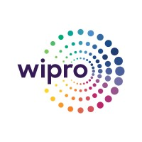

💼 Professional Journey of Impact
With over 11 years of experience in iOS/macOS development, I started as an individual contributor obsessed with interface polish and performance. Over time, I’ve evolved into a developer who thinks end-to-end — from architecture to analytics, from accessibility to App Store strategy. I’ve had the privilege to lead, mentor, and contribute to high-impact projects while staying hands-on and continuously learning.
Software Engineer II
December 2020 - Present
Concentrix Catalyst (Formerly known as ProKarma), Bengaluru, Karnataka, India
- Collaborated closely with product managers to conceptualize, build, test, and deliver high-impact products aligned with business goals.
- Reviewed Statements of Work (SOW) and provided accurate time estimates for development timelines and deliverables.
- Worked alongside the UX team to design user interfaces focused on usability, accessibility, and platform guidelines.
- Guided and mentored team members, assigning tasks via Jira, ensuring smooth sprint execution and feature ownership.
- Led the design and development of Proof of Concepts (POCs) for next-generation, innovative functionalities, and proposed viable solutions.
- Took ownership of complex technical modules, completing them end-to-end with performance and scalability in mind.
- Conducted client demos to showcase progress, gather feedback, and drive approval for features and releases.
- Maintained unit test coverage ≥ 90%, ensuring stability and reducing regression risks in releases.
- Delivered builds for beta testing phases using automated CI/CD pipelines and managed pre-release versions.
- Continuously monitored app performance, identifying and addressing memory issues and optimization opportunities.
- Submitted weekly status reports to clients, maintaining transparency and proactive communication throughout project cycles.
Senior Project Engineer
March 2019 - December 2020

- Identified, debugged, and resolved development radars (bugs/issues) raised by users and QA teams.
- Designed and implemented test script automation frameworks to improve efficiency and reliability of regression testing.
- Maintained clean and scalable codebases, refactored modules, and ensured alignment with architectural guidelines.
- Followed project-wide code conventions and repository hygiene practices, addressing and resolving peer-review feedback.
- Developed time-efficient and effective automation methods to accelerate test case execution and reporting.
- Handled development, maintenance, and implementation of complex project modules with minimal supervision.
- Worked independently and applied sound judgment to plan, execute, and prioritize tasks in fast-paced environments.
- Acted as a key contact for technical queries and support from internal team members and stakeholders.
- Mentored junior developers, providing coaching, guidance, and technical onboarding support.
- Assisted in functional testing, test case writing, and raised radars for UI/UX and workflow inconsistencies.
- Used Python scripts to extract test coverage data from `.xcresult` files for visibility and reporting.
- Proactively submitted innovative ideas to improve workflows and reduce client-side operational costs.
iOS Developer
May 2015 - December 2018
ZakApps Software Pvt. Ltd, Chennai, Tamil Nadu, India
- Gathered and analyzed product features and technical scope as per the client's requirements.
- Collaborated with UI/UX designers to finalize app designs and secure client approval before development.
- Ensured full compliance with App Store Review Guidelines during the entire development lifecycle.
- Wrote unit test cases aligned with each feature requirement to ensure coverage and stability.
- Prepared Technical Design Documents (TDD), Statements of Work (SOW), and Work Breakdown Structures (WBS) when necessary.
- Modularized app development by dividing features into UI and functional components.
- Identified required third-party integrations and proposed relevant cloud-based services for each module.
- Defined and shared API requirements with backend teams to develop RESTful services aligned with frontend needs.
- Developed native iOS applications using Objective-C and Swift in the Xcode IDE.
- Utilized appropriate iOS SDKs and Apple frameworks such as UIKit, Foundation, CoreData, etc.
- Worked within an Agile development framework — delivered weekly client updates and iterative test builds.
- Released beta builds through TestFlight for UAT and internal QA testing.
- Prepared and compiled all metadata, assets, and screenshots required for App Store submission.
- Closely collaborated through the review process until the app was approved and published on the App Store.
Software Engineer
January 2014 - May 2015
Jouster Labs Pvt Ltd, Bengaluru, Karnataka, India
- Collaborated with team members to understand project requirements, workflows, and user expectations.
- Adapted to new technologies and tools while contributing to real-world app development projects.
- Contributed to UI enhancements and refinements for existing iOS applications.
- Learned and implemented efficient UI practices to ensure intuitive and performant interfaces.
- Analyzed and supported the functional behavior of the application throughout its development stages.
- Built iOS applications from scratch, including full setup and configuration of projects.
- Managed complete App Store setup, including creation of certificates, provisioning profiles (development, distribution, push notifications).
- Wrote and maintained unit test cases to validate application logic and prevent regressions.
- Coordinated with server teams and QA engineers to test APIs, fix issues, and ensure smooth delivery.
- Generated builds for Ad-Hoc testing and distributed them to testers for feedback and validation.
- Handled end-to-end steps to publish apps to the App Store, including submission and final approval.